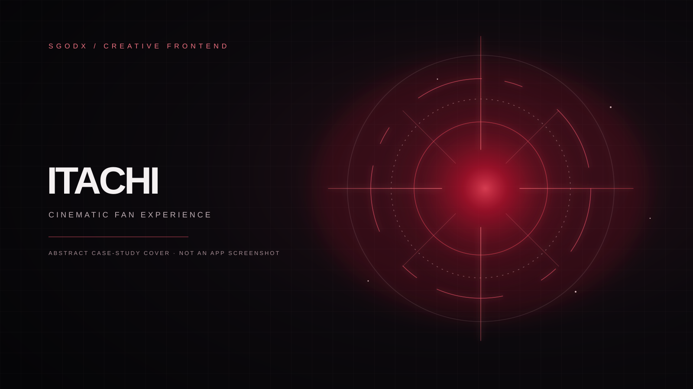

Motion from still frames
A 71-frame canvas sequence follows scroll progress in either direction, with feather layers responding to movement.
Creative frontend / case study 02
A dark, atmospheric browser experience built around scroll, gaze, and light. A frame-scrubbed opening gives way to a reactive Sharingan sequence and a WebGL Jutsu reveal.

Original abstract cover artwork · no production screenshot or character media included
The experience
Three visual acts connect a frame-by-frame introduction, an interactive gaze, and a pointer-driven Jutsu reveal.
A 71-frame canvas sequence follows scroll progress in either direction, with feather layers responding to movement.
A 51-frame eye sequence and a nine-position lookup make the gaze track pointer or touch input.
A radial reveal, parallax, and a WebGL smoke cursor bring the storm section to life, with an interaction fallback when WebGL is unavailable.
Creative engineering
A small static project uses direct browser APIs for its image sequences, motion layers, and optional sound.
The primary story and gaze are drawn from local JPG sequences; feather and flame layers are rendered on canvas.
An optional smoke cursor complements the Jutsu reveal; lightning is drawn as SVG.
Thunder is synthesized on demand. Native Node scripts serve the page and validate its local assets.
Visual preview
Credits & scope
Uchiha Itachi and Naruto belong to their respective rights holders. This project is unofficial and is not affiliated with, sponsored by, or endorsed by them. The production frame imagery's creators and redistribution permissions remain unverified; no such media is included here.
The production project's notice attributes a Ghost Cursor fragment to React Bits and identifies a pinned source commit. Its code and shader are not part of this case study. Read the full notice.
Creative development and maintenance are credited to SGODX / dpsychoo.